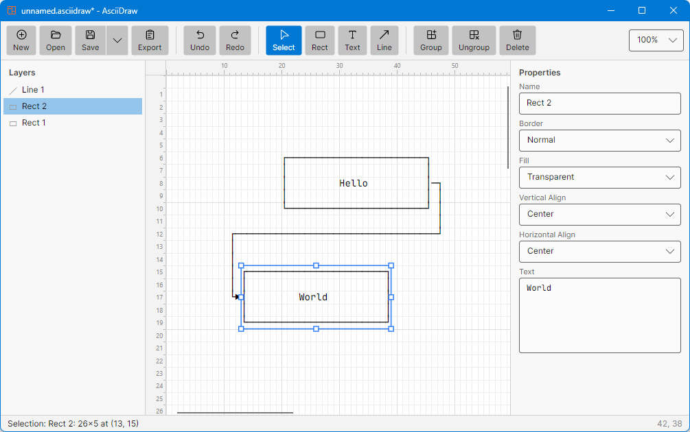

AsciiDraw
AsciiDraw is a desktop app for drawing text-based art — diagrams, flow charts, and layouts made of Unicode box-drawing characters. Sketch with the mouse like in any vector editor; the result is plain text you can paste into source code, documentation, commit messages, or anywhere else a monospace font lives.

┌────────────┐
│ Hello │──────┐
└────────────┘ │
▼
┌────────────┐
│ World │
└────────────┘
AsciiDraw runs on Windows, macOS, and Linux (built with Avalonia, compiled to native code).
Getting started
Download the package for your platform from the
releases page, unzip,
and run AsciiDraw. No installation or runtime is required.
To build from source you need the .NET 10 SDK:
dotnet run
The window
- Toolbar (top) — file actions, undo/redo, drawing tools, grouping.
- Layers (left) — every element in z-order, topmost first. Click to select, drag rows to restack elements, groups show their members indented.
- Canvas (center) — the character grid, with column/row rulers and a zoom control (50%–200%).
- Properties (right) — name, styles, text, and alignment of the selected element.
- Status bar (bottom) — current selection details and the cell under the mouse cursor.
Elements
There are exactly two element types:
Rectangle — a box with a position and size (minimum 2×2 cells). Properties:
| Property | Values |
|---|---|
| Border | Normal ─, Bold ━, Double ═, or None |
| Fill | Transparent (shows what's behind) or Solid (hides it) |
| Text | Multi-line content, word-wrapped inside the border |
| Vertical align | Top / Center / Bottom |
| Horizontal align | Left / Center / Right |
A text box is just a rectangle with border None — create one directly with the Text tool.
Line — an orthogonal polyline between two endpoints, drawn as step
segments. Lines have a style (Normal / Bold / Double) and independent start
and end arrowheads (▶).
Tools
| Tool | Action |
|---|---|
| Select | Click to select (clicking a grouped element selects the whole group). Drag to move, drag the 8 handles to resize, drag a line endpoint to reroute, drag on empty canvas to rubber-band select. |
| Rect | Drag to draw a rectangle. |
| Text | Drag to draw a borderless text box. |
| Line | Drag to draw a line. Start or end near a rectangle to connect it. |
After drawing, the app switches back to Select automatically.
Connecting lines to rectangles
Every rectangle has eight connection points: four corners and four edge midpoints. While dragging a line endpoint near a rectangle, the points light up and the endpoint snaps to the nearest one.
A connected endpoint is anchored: move or resize the rectangle and the line follows, re-routing automatically. Each connection point has a direction — a line attached to the left midpoint always exits leftward first, a bottom connection exits downward, and so on — and routes use the minimum number of segments that respect those directions without cutting through either rectangle:
┌────────┐
│ │──┐
│ │ │
└────────┘ │ ┌───────┐
│ │ │
└──│ │
│ │
└───────┘
Styles and overlaps
Borders and lines come in three weights, and overlapping art merges into the
correct junction characters instead of overwriting — crossing a Normal border
with a Bold edge yields ┿, with a Double edge ╪, and so on. Solid-filled
rectangles hide what's behind them, terminating hidden lines cleanly at their
border:
┌──────────────────┐
│ │
│ ┏━━━━━━━━━━━┿━━━━━━┓
│ ┃ │ ┃
│ ┃ ╔══════╪══════╬═════╗
└──────╂────╫──────┘ ┃ ║
┗━━━━╬━━━━━━━━━━━━━┛ ║
║ ║
╚═══════════════════╝
(Unicode has no Bold×Double junction glyphs, so those crossings render as ╬.)
Groups
Select several elements and press Group (Ctrl+G): they move as one and appear under a group header in the layers panel. Ungroup (Ctrl+Shift+G) dissolves the group. Dragging a layer row into a group's block adds the element to that group; dragging a member out removes it.
Files and export
The native format is .asciidraw — a readable JSON file containing every
element with its position, size, styles, text, and connections. Unsaved
changes are marked with * in the title bar, and the app asks before
discarding them.
Ways to get your drawing out (all cropped to the used area):
- Export button — copies the drawing as plain text to the clipboard.
- Save ▾ → Text —
.txtfile. - Save ▾ → SVG — vector image rendered with the same monospace font.
- Save ▾ → PNG — bitmap image.
The canvas, clipboard, and all exports render through the same engine, so what you see is exactly what you get.
Keyboard shortcuts
| Shortcut | Action |
|---|---|
| Ctrl+N / Ctrl+O / Ctrl+S | New / Open / Save |
| Ctrl+Z / Ctrl+Y | Undo / Redo |
| Ctrl+G / Ctrl+Shift+G | Group / Ungroup |
| Delete or Backspace | Delete selection |
| Arrow keys | Nudge selection by one cell |
| Shift+click | Add to / remove from selection |
| Escape | Clear selection |
Rendering font
Everything is rendered with the bundled Maple Mono typeface, so the canvas, exports, and the text you paste elsewhere line up identically when viewed in any monospace font with box-drawing support.